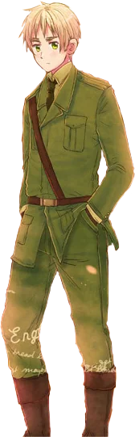
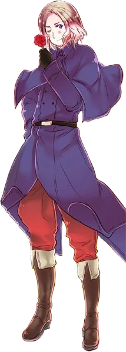

ABOUT THE CHARACTERSSSSSS
 England: He is the personification of the country of England. His human name is 'Arthur Kirkland' and is around 23 in human years. His MBTI is INTJ. He has messy short blond hair and green eyes and his most iconic physical feature is his overly exaggerated thick eyebrows. He wears a green military uniform as well. His vocabulary is very... british (if you know what I mean T-T) and is a bad cook. He has a strong belief in magic and folklore, being able to communicate with magical creatures (the other characters can't see or talk to them so they think England is hallucinating or something.)

France: He is the personification of the country of France. His human name is Francis Bonnefoy and is around 26 in human years. His MBTI is ESFP. He has shoulder length slightly wavy blond hair and blue eyes and an iconic stubble. (WHY IS BRO SO ZESTY.) He wears a long blue coat (??) and bright red pants because of how 'showy' he is shown to be. His main interests are rivaling England and acting like a 'perv' towards people (no matter who it is.) He is very affectionate towards the ones he loves and loves his culture. Oh yeah, he is apparently attracted to people no matter the gender or AGE. ToT